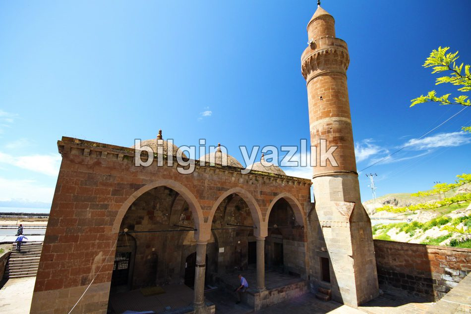
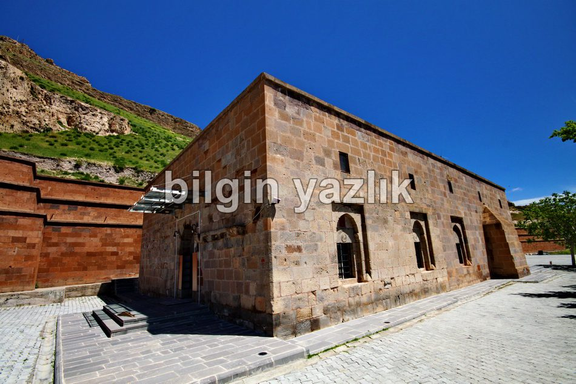
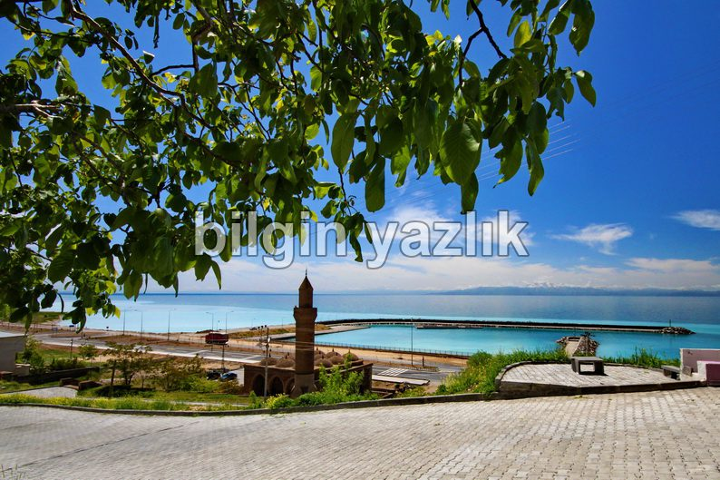
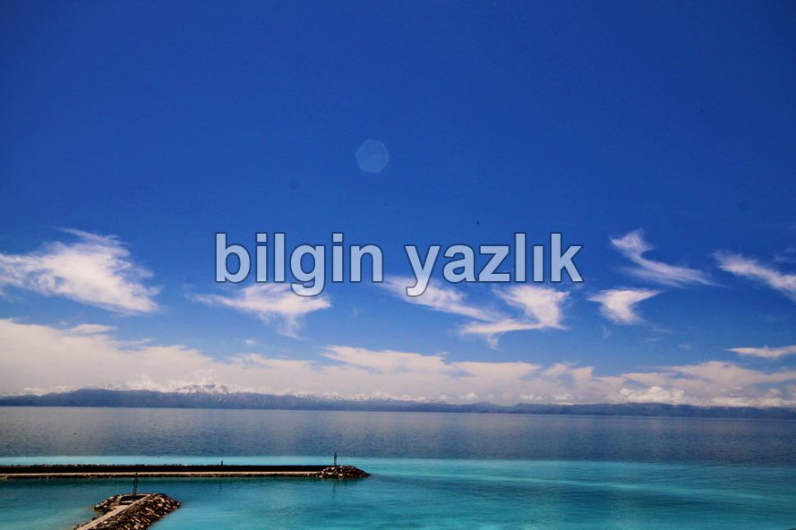

Van Gölü Havzası · 30 Mayıs 2013
Mimarsinan Tuğrulbey (Zalpaşa) Camii
Adilcevaz – Bitlis yolu üzerinde Van Gölü’nün hemen kıyısında inşa edilmiş olan bu caminin adı Tuğrulbey (Zalpaşa) Camii’dir. Cami üzerinde yer alan bilgilendirme tabelasında ise şunlar yazıyor: “16. yy Osmanlı eseridir. Mimar Sinan tarafından yapılmıştır.” Cami son derece iyi durumda ve ibadete açıktır. Caminin biraz yukarısında ikinci bir cami daha vardır. Camiden görünen göl manzarası heyecan verici güzelliktedir.




Bu yazı taliyol arşivinden taşınmıştır. · özgün kayıt